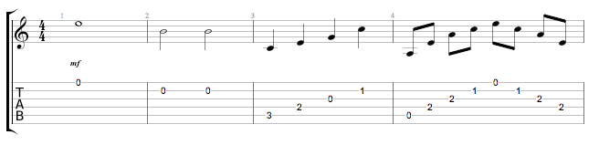
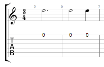
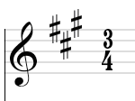

Pour utiliser Guitar Pro, il est recommandé de savoir lire une tablature et d’avoir des notions de rythmique.
Voici une rapide introduction à ces notions de base.
La notation tablature a été créée afin de faciliter la lecture de la musique pour les instruments à cordes. Son apprentissage est très rapide - voir immédiat - et ne nécessite aucune connaissance du solfège. Elle offre de plus l'avantage d'indiquer clairement la corde à jouer, ce qui est important puisqu'une même note peut être jouée sur différentes cordes.
Chaque corde de la guitare est représentée
par une ligne. Les chiffres indiquent les cases sur lesquelles doivent
appuyer les doigts. Le chiffre 0 représente une corde jouée à vide, c'est-à-dire
sans appuyer sur les cases du manche. La ligne du bas représente la grosse
corde (bourdon) et la ligne du haut la corde la plus fine (chanterelle).
Cette configuration correspond à ce que l'on voit lorsqu'on se penche
au-dessus de sa guitare, à l'inverse de la vue que l'on peut avoir lorsqu'on
est en face de la guitare (spectateur).
Les accords :
Guitar Pro utilise la notation anglo-saxonne
pour les accords. Voici la correspondance en français :
|
A |
B |
C |
D |
E |
F |
G |
|
La |
Si |
Do |
Ré |
Mi |
Fa |
Sol |
La musique se compose de notes ayant des durées différentes. La durée d'une note n'est pas exprimée en secondes mais en fonction du tempo. Une noire représente un temps. Le tempo s'exprime en bpm (beat per minute), c'est-à-dire en nombre de battements par minute. Ainsi, si le tempo est de 60, une noire dure 1 seconde. Si le tempo est de 120, une noire dure ½ seconde. Les notes sont ensuite définies en fonction de la noire :

Lorsqu'une note est pointée, sa durée est augmentée de sa moitié (x1,5) :

Les n-tolets (triolets, quintuplets, sextuplet...) consistent à jouer un certain nombre de notes dans un nombre de temps défini. Par exemple, un triolet de croches (soit 3 x 1/2 temps = 1 temps et demi) se joue sur un seul temps :

La signature et l'armure :
|
 |
La signature détermine le nombre de temps de la mesure. Par exemple, pour une signature en 3/4 : le 4 indique que le temps de référence est la noire (ronde / 4), et le 3 indique qu'il y a 3 battements dans la mesure, soit 3 noires dans ce cas.
L’armure indique les altérations à la clef (dièses ou bémols). |